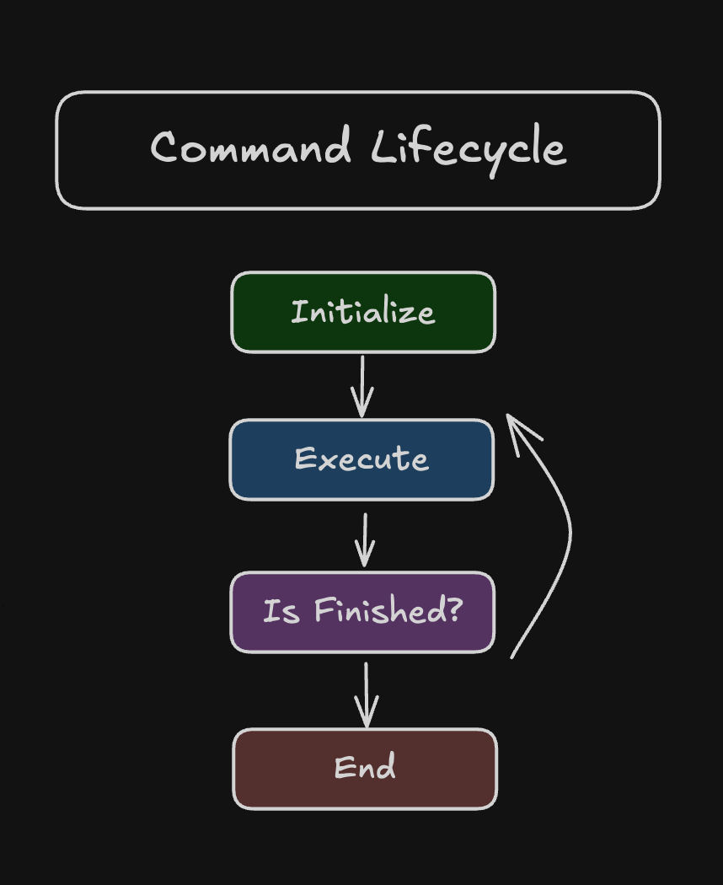
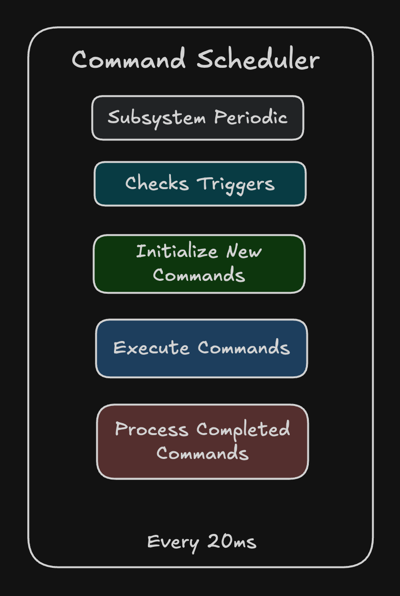

What are Commands
A command is one job. Spin the motor. Stop the motor. Later, drive it to a position. The subsystem owns the Falcon. The command says what to do with it, and when to quit.
You already ran one. In MotorSubsystem, spin() looks like this:
runOnce() builds a command. Calling spin() does not spin the motor yet. It only builds the command. The motor moves when that command gets scheduled, which is what the A button did in the last project.
The Lifecycle
Every command goes through the same four methods. The Command Scheduler calls them. You do not call them from robotPeriodic().

1. initialize()
Called once when the command starts. runOnce puts your lambda here, runs it, and then the command is already done.
2. execute()
Called over and over, about every 20ms, while the command is still going. This has to return quickly. The scheduler is already the loop. Do not write your own while inside execute().
3. isFinished()
Called over and over to ask if the job is over. Return true and the command stops. A timer running out, a position getting close, or a button getting released are all normal reasons.
4. end(boolean interrupted)
Called once when the command stops. interrupted is false if the command finished on its own. It is true if another command took the subsystem and cancelled this one. This is where you stop the motor if you need to leave the mechanism in a safe state.
The Scheduler
The scheduler is the loop that actually runs commands. Robot.java already calls it. Our job is to hand it commands.

When a button schedules a command, the scheduler puts it on a list. Every cycle it calls execute() and isFinished() on whatever is on that list. If the new command needs a subsystem that is already in use, the scheduler calls end(true) on the old one and then starts the new one. When a command finishes, it gets taken off the list.
runOnce on MotorSubsystem also requires the subsystem for us. That single line is a whole command. Next lesson we will use a couple more helpers for jobs that need to keep running.
Challenges
If you get stuck, spend ~10-20min before asking for help.
-
In
spin(), addSystem.out.println("spin");next tosetVoltage. Deploy, press A a few times, and look at RioLog. You should get one line per press. Then take the print out. -
You should already have
stop()from the first project. If you do not, add it: arunOncethat sets the voltage to 0. It just needs to compile. We will bind it again in the next lesson.